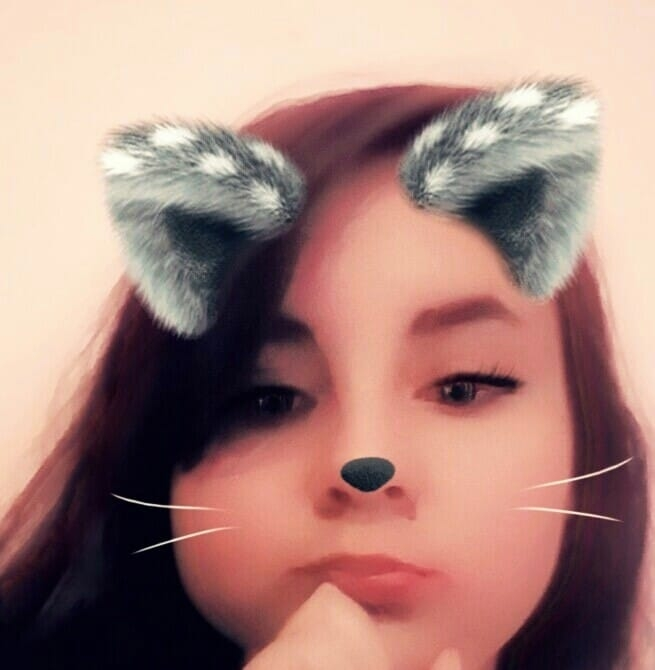
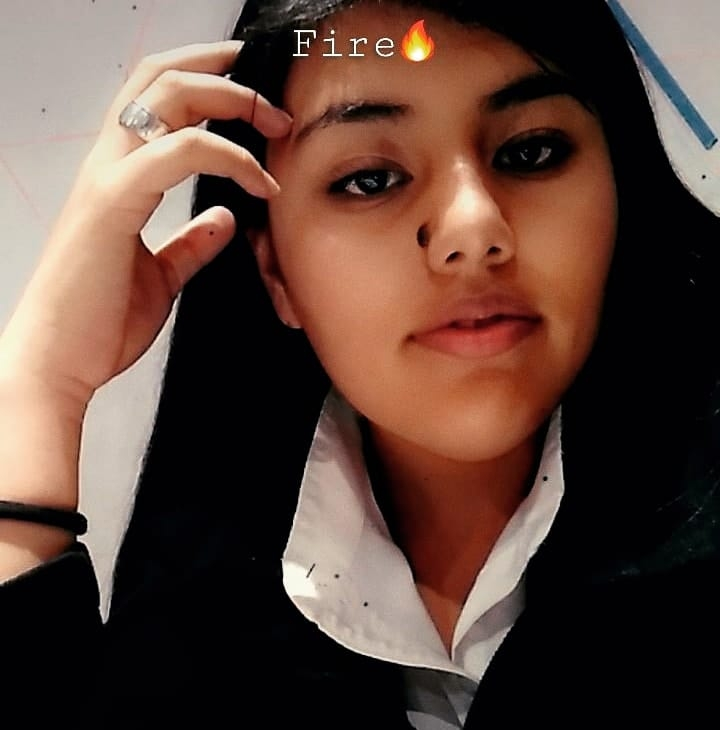
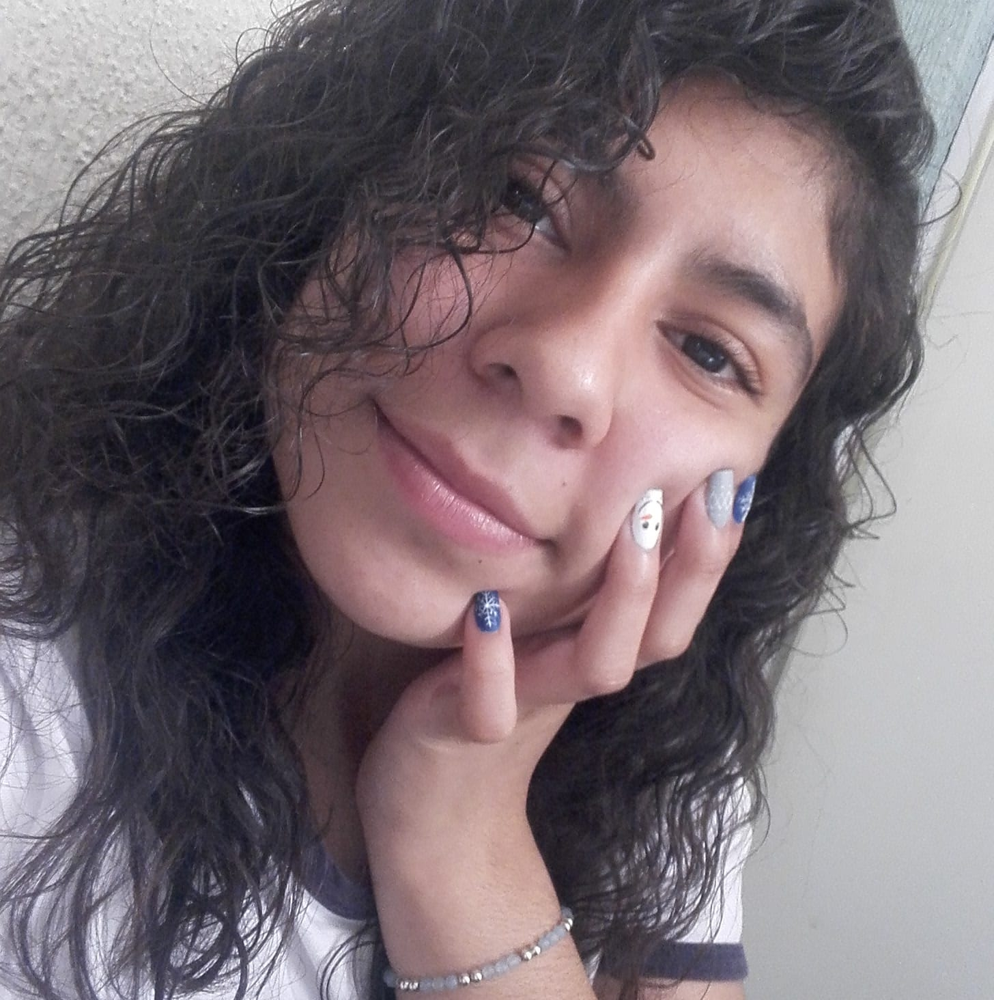
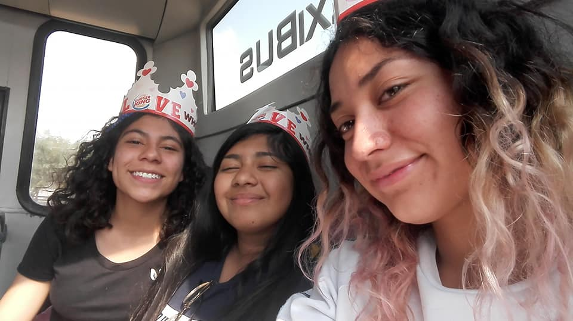
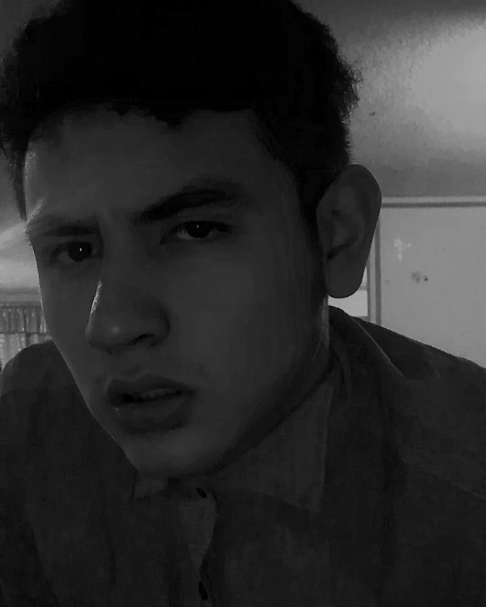
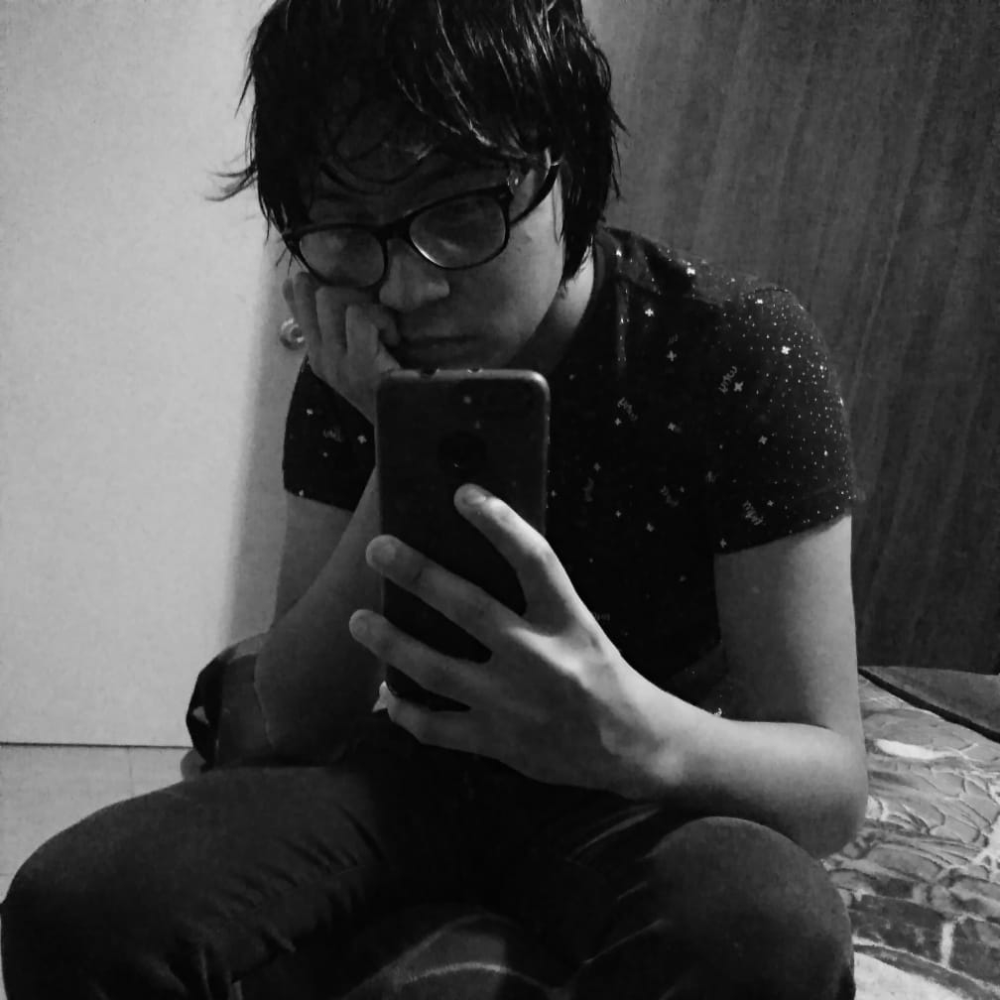

Mis amiguis
Para mi, mis amigos son una parte muy importante de mi vida, incluso son la mejor familia que algunos familiares, me siento muy agradecida con estas personas que me han hecho crecer y me han escuchado cuando nadie quizo, les pido disculpas por mis ataques de impulsividad nunca les he querido hacer da ? y si yo encuentro bien ustedes lo sabran, yo no soy una persona que hace esas cosas, somos de las personas que buscan cortar una amistad antes de da Unos rse unos a otros por eso me agradan mucho.
Me encantan estar con ustedes, los quiero mucho y los quiero ver triunfar xd

Ella es Isabel, es una niña muy tierna, pero para sus sorpresa noo es tan amble, ella es muy habil puede dibujar muy bien y es muy graciosa, llevo de conocerla 4 años, hemos pasado muchos cumplea juntas y hemos viajado y conocido muchos lugares juntas, tiene 16 a lleva sy lleva muy buenas calificaciones, su familia me cae muy bien y me han llevado a muchas fiestas, la quiero mucho y quiero pasar mucho más tiempo juntas

Akira, a ella la conoci gracias a unos plumones, recuerdo que era la nueva chica del salón y siendo sinceros tiene el caracter muy fuerte y es explosiva, por lo cual era cruel, pero es su naturaleza y despues de a la s la entiendo, es una persona muy fuerte, con grander sue que s que sin duda lograra, y no quiero que se vaya de mi lado, es un gran apoyo, es muy bonita y talentosa, me gusta mucho su peronalidad extrovertida.
Este hermano se llama Uriel y yo cayo super, el valia que yo fuera de mujer y yo teníamos como otro de sus amigos, el era muy igualitario y por primera vez un ni ? me trato de una forma diferente, es bien chido y me agrada , es muy gracioso y amable, es un pelin amargado pero esta muy padre juega con el que siempre me hace competencia, esta bien alto y feo. Te quiero uriel
ESTA SOLTERO

Aylin es la niña mas linda que vas a poder encontrat en elmundo, se preocua muchoporlas personas y tiene corazon de pollito uwu, es muy inteligente y audaz, me cai muy bien y megustaria conocerla mas. Ama mucho a los pinguinos

Daana es la niña de en medio, somos como hermanas gemelas siempre decimos cosas al mismo tiempo y es muy chistosa la quiero muchos, y le agradamos a todos en el salón porque tiene un carácter muy peculiar.
Personas que me caen bien

